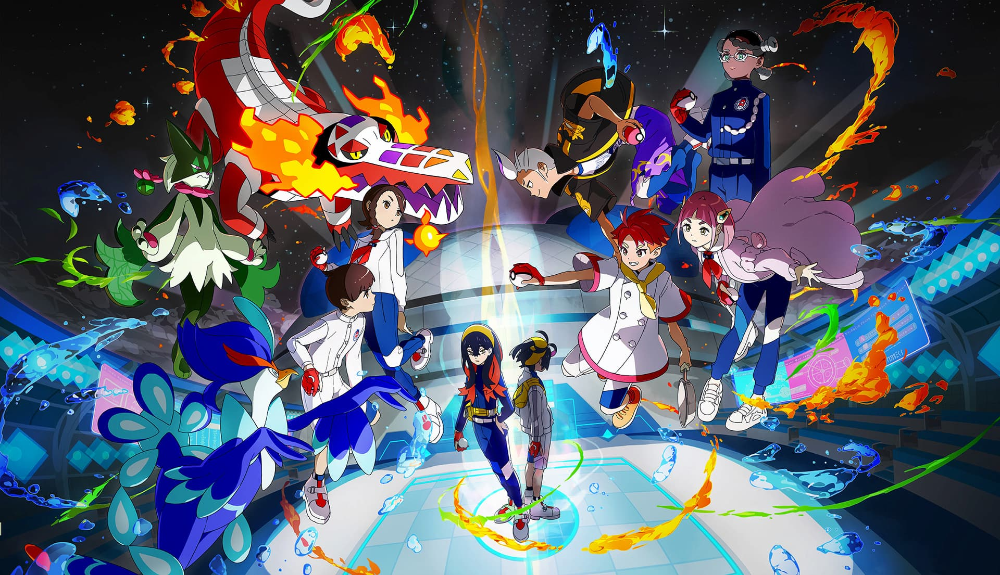
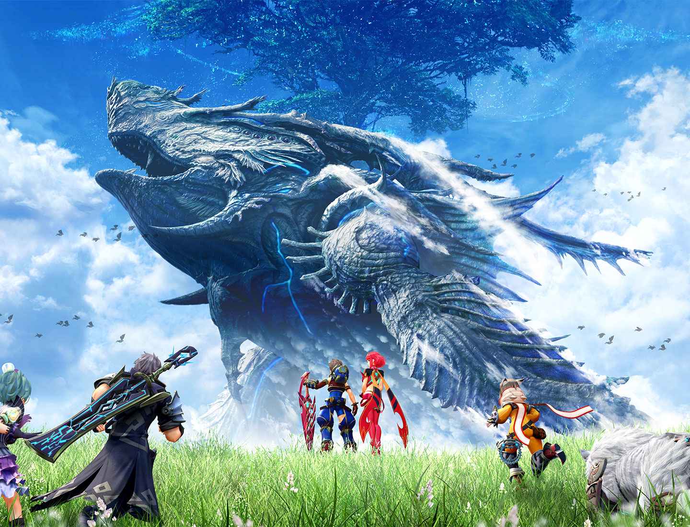
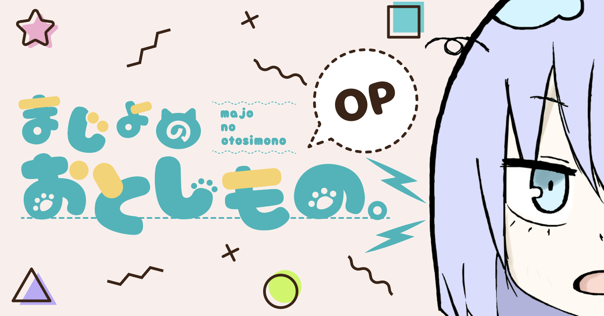

魔女的梳妆台
我是nzhuangtao，来自广东，是一名前端开发者，喜欢一切美丽的事物，有代码洁癖，工作中热衷于用最精简的代码实现最多的功能， 与大多数开发不一样，我更喜欢原生技术，不喜各类框架。业余热爱游戏，喜欢收集各类橡皮。
基本信息
- 工作 前端开发
- 毕业院校 佛山科学技术学院
- 专业 网络工程
- 擅长的技术 animate.js
- 特点 挑食
工作履历
公司网站：https://www.water520.com/
目前正在一家家电公司担任前端开发，主要负责前端安全与体验优化工作， 主要使用到的技术有vue2.x,echarts,animate.js,pixi.js。
业余学习
业余时间主要学习的还是css动画的设计与实现，比起功能复杂使用各种 高大上的技术，我更喜欢美观，提升体验上的技术。除此之外还在学习制作 游戏的技术，例如unreal,cocos。
热爱的游戏
-

宝可梦系列
虽然ns两代作品的质量都让我很不满意， 尤其是剑盾开始全图鉴成为过去，对我这种 收集党很不友好，最喜欢的mega系统估计在 6代复刻前也不会再有了，但宝可梦毕竟是 宝可梦，骂完后还是要真香。
-

异度之刃2没玩过1，比起3我更喜欢2，当年被群友安利，因前期慢热 一度曾想放弃，群友的疯狂夸赞成为了我玩下去的动力，到最后 开始成迷。剧情很普通的王道剧情，主角拯救世界，但起起伏伏 让我感到心潮澎湃。
-

test testtest